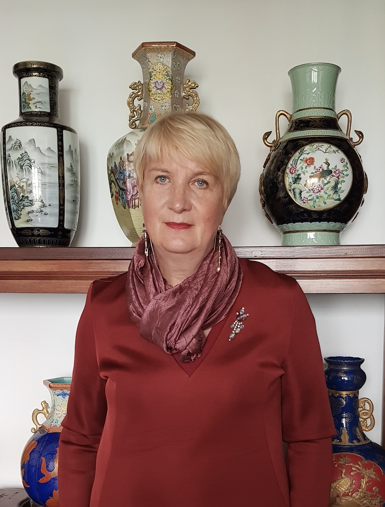

Professor Nona Dmitrievna Dronova · AUT-DRONOVA-N
AUT-DRONOVA-N · Scientific Director and Founder
Nona Dmitrievna
Dronova
Doctor of Technical Sciences
Ph.D. in Geology and Mineralogy
Scientific Director and Founder —
Global Diagnostic Atlas of Ancient Chinese Ceramics
Research areas
Section 1
Research Profile
Professor Nona Dronova is a scholar working at the intersection of art history, materials science, and traditional applied arts technologies. Her research focuses on the instrumental and visual-structural diagnostics of decorative art objects, with a particular emphasis on ancient Chinese porcelain from various dynastic periods.
Within the framework of the project Atlas of Diagnostics of Ancient Chinese Porcelain, Professor Dronova develops a methodological approach based on the integration of morphological analysis of form, the study of glaze microstructures, surface microrelief, and technological firing characteristics. Special attention is given to identifying stable diagnostic features that allow differentiation between production periods, regional schools, and technological traditions of various Chinese ceramic centres.
A significant aspect of Professor Dronova's work is the interpretation of aesthetics as an integral part of the technological system. Within the Atlas, form and visual expressiveness are not treated in isolation, but rather as outcomes of specific production decisions shaped by the traditions of particular dynasties, raw material composition, and firing regimes.
Section 2
Methodological Contribution
Professor Dronova's methodological framework follows a stepwise analytical principle, moving from macroscopic characteristics — proportions, silhouette, compositional structure — to microscopic and physico-chemical parameters of the surface: crackling patterns, inclusion distribution, sintering behaviour, and phase transitions.
This approach allows porcelain to be interpreted not only as an artistic object, but also as a technological document of its historical epoch. The result is a reproducible, multi-parameter diagnostic system applicable to both museum practice and expert authentication.
01
Morphological Analysis
Proportions, silhouette, compositional structure — macroscopic level.
02
Glaze Microstructure
Surface microrelief, glaze layer composition, bubble distribution.
03
Crackle Pattern Analysis
Crackling patterns as indicators of age, firing technology, and glaze composition.
04
Firing Characteristics
Sintering behaviour, phase transitions, thermal deformation indicators.
05
Inclusion Distribution
Identification and mapping of mineral inclusions within the ceramic body.
06
Archival Verification
Cross-referencing physical findings with historical records and published scholarship.
Section 3
Role in This Atlas
Professor Dronova is the Scientific Director and Founder of the Global Diagnostic Atlas of Ancient Chinese Ceramics. She is responsible for the overall scientific concept, the information architecture of the knowledge system, all methodological standards, and the diagnostic criteria applied to every reference object in the collection.
The project aims to create a structured knowledge base applicable both to museum practice and expert authentication, as well as to the scientific study of the evolution of Chinese ceramic production.
Principal reference objects
RO-MING-JDZ-001 — Imperial Sacrificial Yellow Bottle Vase with Dragon and Phoenix
Ming Dynasty · Chenghua Period (1464–1487) · Imperial Kilns, Jingdezhen · Confirmed
Section 4
Organisation
Foundation
International Foundation — Global Archive for Authentication of Antique Porcelain
Professional body
College of Experts and Appraisers of Antique Arts